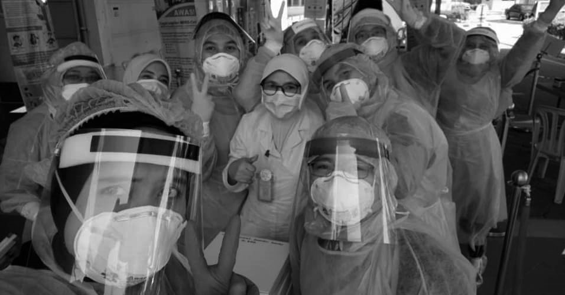
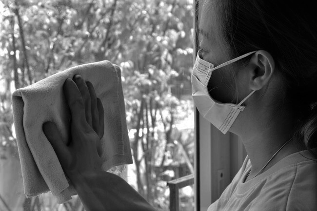

Solutions to Reduce the Risks of the Pandemic
SUMMARY: Despite the excellence of today's scientists in the fields of medicine and medical research, it would still take a very long time before a vaccine against COVID-19 could be developed. However, there are techniques that could be done by the entire community in order to combat the virus right away without using medication at all. This site discusses the solutions that we can take in order to combat the virus, including wearing masks and face shields when going in public, following social distancing rules, staying at home when you do not need to go out, and maintaining proper hygiene.
One would probably be wondering how we are going to combat the pandemic without a vaccine, since this would be something that would be obviously practical. However, a vaccine trial has to undergo more than three stages in order to be deemed as ethical and scientifically practical. This will be done in order to incur the least damange possible. It would therefore probably take a long time before we could get a vaccine. Therefore, how would we be successful in this pandemic?
Social Distancing
People social distancing in India. Image by Navesh Chitrakar from this website.
COVID-19 can easily be spread through one thing: close contact without wearig protection. The transmission distance of the virus is at around 1 meter. Anything less than that, you will most likely get the disease. Talk about getting some Corona when you don't need it the most.
According to the World Health Organization, the chance of transmission at a distance of around 1 meter is 12.8%. When you increase it to somewhere that is higher (say at 2 meters), you get a risk reduction of up to 2.1%. Even without a face mask, this is very effective. Imagine how much more you can get from staying at home (definitely a distance of more than 1 meter from others) while having a wall that keeps you away from people on the outisde of your home.
Wearing Face Masks and Protective Equipment
Frontliners wearing protective equipment when facing the people who have COVID-19
Face masks are a wonderful invention that has been made in order to protect us from people who have contracted the virus, and to protect the people who contracted the virus to spread the virus to us. This means that we are more likely to protect people from actually getting the disease when most of the people wear a mask.
According to numerous studies, the masks that are most effective are the surgical masks, N95 masks, N99 masks. These will be effective in any situation (whether you are in the MRT or workplace. However, for general situations, wearing a cloth mask would be enough. In fact, this is something the minimum requirement to be considered someone who is not violating the law.
Other equipment that would be useful are face shields, goggles, and others in order to protect the droplets from entering other entry points in the body.
Maintaining Proper Hygiene
A person wearing a mask while cleaning a window.
There have been no reports as of now on how long the virus most likely stays on a surface, meaning that we do not know how long the virus will live in a certian susbtance. However, there are estimates in the research that have been shown before. This can be seen in the table below:
| Surface | Examples | Length of Virus Life |
|---|---|---|
| Metal | doorknobs, silverware, jewelry, etc. | 5 days |
| Wood | furniture, decking | 5 days |
| Plastics | milk cartons, detergent bottles, elevator buttons, backpacks | 2 to 3 days |
| Cardboard | shipping boxes | ~1 day |
| Copper | coins, cookware | ~ 4 hours |
| Aluminum | soda cans, tinfoil | 2 to 8 hours |
| Glass | drinking glasses, windows | less than 5 days |
| Ceramics | dishes, pottery, mugs | 5 days |
| Paper | mail, newspaper | a few minutes to 5 days |
| Skin | 9 hours |
Since we are to know that these are already effective enough, the best that we can do is clean surfaces from time to time with materials like detergent and others in order to avoid contracting the virus whenever you touch a certain object.
It is also advisable that you use an effective handwashing technique in order to avoid spreading virus if ever you touch something that has a virus:
{kind=link}